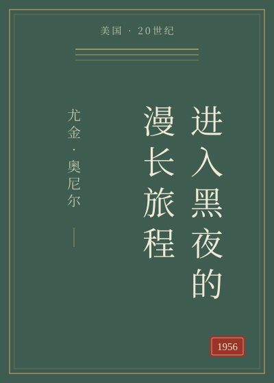
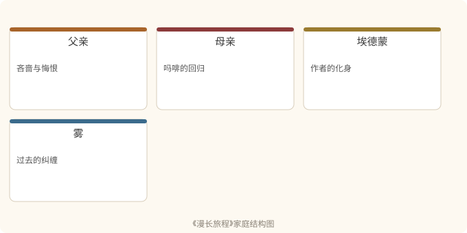

进入黑夜的漫长旅程
一、基本信息
| 作者 | 尤金·奥尼尔 |
|---|---|
| 成书/出版 | 身后1956年上演（作者页B272口径：Long Day's Journey into Night produced posthumously 1956——masterpiece） Eugene ONeill — Encyclopaedia Britannica（百科全书） |
| 国别/地区 | 美国 |
| 时代 | 现当代 · 20世纪 |
| 体裁 | 自传性戏剧 |
| 语言 | 英语 |

《漫长旅程》家庭结构图（主题·结构图）
二、创作背景
作者页（B272）：'His masterpiece, Long Day's Journey into Night (produced posthumously 1956)'——身后上演的杰作；'drew heavily on family tragedy and Greek tragedy'。
四项普利策戏剧奖之一（B272：four Pulitzer prizes in drama——含本作）。
题材（通说待核）：蒂龙一家的一天——吗啡、酗酒与病（自传性）。
三、内容脉络
蒂龙一家的一天：吗啡、酗酒与病——'过去'如何纠缠当下（通说待核）。
四、主要人物表
| 人物 | 身份 | 说明 |
|---|---|---|
| 詹姆斯·蒂龙 | 父亲 | 吝啬演员（通说待核） |
| 玛丽 | 母亲 | 吗啡成瘾（通说待核） |
| 埃德蒙 | 小儿子 | 作者化身（通说待核） |
五、主题与艺术特点
- 家庭的毒瘾与宽恕（通说待核）。
- '希腊悲剧'的家庭版（B272 语境）。
- 自传性（通说待核——奥尼尔家庭）。
六、影响与评论
- Britannica：'His masterpiece, Long Day's Journey into Night (produced posthumously 1956)'（B272）。
Eugene ONeill — Encyclopaedia Britannica（百科全书） - Britannica：四项普利策戏剧奖之一（B272）。
Eugene ONeill — Encyclopaedia Britannica（百科全书）
七、阅读建议
难点
- 自传对应（奥尼尔家族）。
- 长独白的节奏。
- 《进入黑夜的漫长旅程》（人民文学出版社/湖南文艺出版社版本，通说待核）。
- 英文原版（Yale）。
奥尼尔收官之作。
八、待核实
- 身后1956年（Yale University Press出版/百老汇演出说）核对。
- 蒂龙一家对应（奥尼尔父兄）待核。
- 四项普利策年份逐项核对。
本页主要来源
尤金·奥尼尔的其他收录作品：进入黑夜的漫长旅程